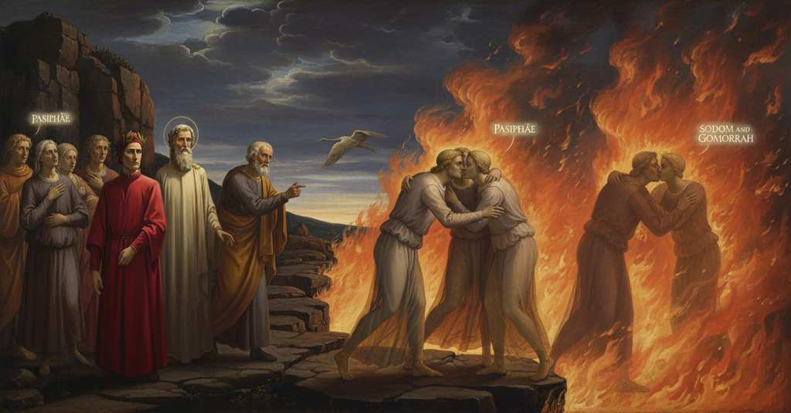

Purgatorio — Canto 26

Nel cerchio dei lussuriosi, Dante, stupore delle anime perché ancora vivo, apprende la distinzione fra le due schiere, incontra devotamente Guido Guinizzelli e Arnaut Daniel, che gli chiedono memoria e preghiere prima di svanire nelle fiamme. In the circle of the lustful, Dante, astonishing the souls because still alive, learns the distinction between the two bands, devoutly meets Guido Guinizzelli and Arnaut Daniel, who ask him for remembrance and prayers before vanishing into the flames. 色欲者の圏で、なお生きているために魂たちを驚かせたダンテは、二つの一団の違いを知り、敬虔にグイド・グイニツェッリとアルノー・ダニエルに会い、彼らは炎の中に消える前に彼へ記憶と祈りを求める。
1
Mentre che sì per l’orlo, uno innanzi altro,
While thus along the edge, one before another,
このように縁を、一人また一人と前になり、
2
ce n’andavamo, e spesso il buon maestro
we went our way, and often the good master
私たちが行く間、しばしば善き師は
3
diceami: «Guarda: giovi ch’io ti scaltro»;
said to me: “Watch: it helps that I make you wary”;
私に言った。「見よ、私がそなたを油断なくさせることが役立つように」と。
4
feriami il sole in su l’omero destro,
the sun was striking me on the right shoulder,
太陽は私の右の肩を打ち、
5
che già, raggiando, tutto l’occidente
which now, with its rays, all the west
その光は、すでに輝きながら、西の空すべてを
6
mutava in bianco aspetto di cilestro;
was changing to a white aspect from azure;
空色の白い様相に変えていた。
7
e io facea con l’ombra più rovente
and I with my shadow made the flame appear
そして私は影によって、より赤々と
8
parer la fiamma; e pur a tanto indizio
more burning; and just at this one sign
炎を見せていた。そして、まさにそのしるしに
9
vidi molt’ ombre, andando, poner mente.
I saw many shades, as they went, take heed.
多くの魂が、進みながら、心を留めるのを見た。
10
Questa fu la cagion che diede inizio
This was the cause that gave a start
これが、彼らが私について話す
11
loro a parlar di me; e cominciarsi
to their speaking of me; and they began
きっかけとなり、そして互いに語り始めた。
12
a dir: «Colui non par corpo fittizio»;
to say: “That one does not seem a fictitious body”;
「あの方は偽りの体ではなさそうだ」と。
13
poi verso me, quanto potëan farsi,
then toward me, as much as they were able,
それから私の方へ、できる限り近づき、
14
certi si fero, sempre con riguardo
certain ones made their way, always with care
ある者たちがやって来た、常に注意しながら、
15
di non uscir dove non fosser arsi.
not to exit where they would not be burned.
焼かれることのない場所から出ないようにと。
16
«O tu che vai, non per esser più tardo,
“O you who go, not for being more slow,
「おお、そなた、より遅くあるためでなく、
17
ma forse reverente, a li altri dopo,
but perhaps reverent, behind the others,
おそらくは敬意から、他の者たちの後を行く方よ、
18
rispondi a me che ’n sete e ’n foco ardo.
answer me, who in thirst and in fire burn.
渇きと炎に焼かれる私に答えてください。
19
Né solo a me la tua risposta è uopo;
Nor to me alone is your answer needed;
あなたの答えが必要なのは私だけではない。
20
ché tutti questi n’hanno maggior sete
for all of these have a greater thirst for it
なぜなら、ここにいる者たちは皆、それに対しより大きな渇きを
21
che d’acqua fredda Indo o Etïopo.
than for cold water an Indian or Ethiopian.
インド人やエチオピア人が冷たい水に抱くよりも、抱いているのです。
22
Dinne com’ è che fai di te parete
Tell us how it is that you make of yourself a wall
教えてください、いかにしてあなたは自らで壁を
23
al sol, pur come tu non fossi ancora
to the sun, just as if you had not yet
太陽にお作りになるのか、あたかもあなたがまだ
24
di morte intrato dentro da la rete».
entered within the net of death.”
死の網の中に入っていないかのように」。
25
Sì mi parlava un d’essi; e io mi fora
Thus one of them spoke to me; and I would have
そのように彼らの一人が私に語った。そして私は
26
già manifesto, s’io non fossi atteso
already revealed myself, had I not been intent
すでに名乗っていたであろう、もしその時現れた
27
ad altra novità ch’apparve allora;
on another novelty that then appeared;
他の目新しいものに、気を取られていなかったなら。
28
ché per lo mezzo del cammino acceso
for through the middle of the burning path
なぜなら、燃える道の中ほどを
29
venne gente col viso incontro a questa,
came people with their faces toward these,
この者たちと顔を合わせるように人々がやって来て、
30
la qual mi fece a rimirar sospeso.
which made me gaze, suspended.
それが私を見つめて立ち止まらせたからだ。
31
Lì veggio d’ogne parte farsi presta
There I see on every side each shade
そこで私は、あらゆる側から素早く
32
ciascun’ ombra e basciarsi una con una
make haste and kiss one another
それぞれの魂が、一人また一人と口づけし、
33
sanza restar, contente a brieve festa;
without stopping, content with a brief festivity;
立ち止まることなく、短い挨拶に満足するのを見る。
34
così per entro loro schiera bruna
so within their dark troop
そのように、彼らの暗い隊列の中で
35
s’ammusa l’una con l’altra formica,
one ant touches snout with another,
一匹の蟻がもう一匹と鼻先を合わせる、
36
forse a spïar lor via e lor fortuna.
perhaps to ask of their way and their fortune.
おそらくは互いの道と運命を尋ねるために。
37
Tosto che parton l’accoglienza amica,
As soon as they part from the friendly welcome,
友好的な挨拶を交わして別れるやいなや、
38
prima che ’l primo passo lì trascorra,
before the first step there runs its course,
最初の一歩をそこで踏み出すよりも先に、
39
sopragridar ciascuna s’affatica:
each one strives to outcry:
各々の魂は声を張り上げて叫ぼうと努める。
40
la nova gente: «Soddoma e Gomorra»;
the new people: “Sodom and Gomorrah”;
新しい人々は「ソドムとゴモラ」と、
41
e l’altra: «Ne la vacca entra Pasife,
and the other: “Into the cow enters Pasiphaë,
もう一方は「雌牛に入るはパシパエ、
42
perché ’l torello a sua lussuria corra».
so that the bull may run to her lust.”
牡牛がその色欲に駆け寄るために」と。
43
Poi, come grue ch’a le montagne Rife
Then, like cranes that to the Rhipaean mountains
それから、リーフェの山々へと
44
volasser parte, e parte inver’ l’arene,
might fly in part, and in part toward the sands,
一部は飛び、一部は砂地へと向かう鶴のように、
45
queste del gel, quelle del sole schife,
these shy of the frost, those of the sun,
一方は氷を、もう一方は太陽を厭うて、
46
l’una gente sen va, l’altra sen vene;
the one people goes away, the other comes;
一方の人々は去り、もう一方はやって来る。
47
e tornan, lagrimando, a’ primi canti
and they return, weeping, to their first chants
そして涙ながらに、最初の歌と
48
e al gridar che più lor si convene;
and to the cry that most befits them;
自分たちに最もふさわしい叫びへと戻る。
49
e raccostansi a me, come davanti,
and they drew near to me again, as before,
そして私のもとへ、先ほどのように再び近づく、
50
essi medesmi che m’avean pregato,
the very same ones who had entreated me,
私に懇願したまさしくその者たちが、
51
attenti ad ascoltar ne’ lor sembianti.
attentive to listen in their appearance.
その表情に聞こうとする様子を浮かべて。
52
Io, che due volte avea visto lor grato,
I, who had twice seen their desire,
私は、二度彼らの願いを見たので、
53
incominciai: «O anime sicure
began: “O souls, certain
こう話し始めた。「おお、いつの日か
54
d’aver, quando che sia, di pace stato,
of having, whenever it may be, a state of peace,
必ずや安らぎの状態を得るであろう確かな魂たちよ、
55
non son rimase acerbe né mature
my limbs have not remained unripe or mature
私の肉体は、未熟なままでも熟したままでも
56
le membra mie di là, ma son qui meco
on that side, but are here with me
あちらに残ってはおらず、しかし、その血と
57
col sangue suo e con le sue giunture.
with their blood and with their joints.
その関節と共に、私と共にここにあるのです。
58
Quinci sù vo per non esser più cieco;
From here I go up so as to be blind no more;
ここから私は、もはや盲目ならざるため、上へと向かいます。
59
donna è di sopra che m’acquista grazia,
a lady is above who acquires grace for me,
天上には貴婦人がいて、私のために恩寵を得てくださり、
60
per che ’l mortal per vostro mondo reco.
for which I carry the mortal through your world.
そのおかげで私は、この肉体をあなた方の世界に運んでいるのです。
61
Ma se la vostra maggior voglia sazia
But may your greatest desire be satisfied
しかし、あなた方の最大の望みが
62
tosto divegna, sì che ’l ciel v’alberghi
soon, so that heaven may house you
速やかに満たされ、あなた方を天が、
63
ch’è pien d’amore e più ampio si spazia,
which is full of love and most amply spreads,
愛に満ち、最も広々と広がる天が、迎え入れますように。
64
ditemi, acciò ch’ancor carte ne verghi,
tell me, so that I may yet write pages of it,
どうか教えてください、私がそれについてなお紙面に記せるように、
65
chi siete voi, e chi è quella turba
who are you, and who is that crowd
あなた方が誰であり、そしてあの群衆は誰であるのかを、
66
che se ne va di retro a’ vostri terghi».
that goes away behind your backs.”
あなた方の背後へと去っていくあの群衆は」。
67
Non altrimenti stupido si turba
Not otherwise does the mountaineer become stupidly confused
山出しが、驚き戸惑うのと少しも違わず、
68
lo montanaro, e rimirando ammuta,
and staring fall silent,
見つめながら絶句するのと、
69
quando rozzo e salvatico s’inurba,
when rough and savage he enters the city,
粗野で野暮な彼が都会に入る時に、
70
che ciascun’ ombra fece in sua paruta;
than each shade did in its appearance;
それぞれの魂はその様子でそうであった。
71
ma poi che furon di stupore scarche,
but after they were unburdened of their stupor,
しかし、驚きから解放されると、
72
lo qual ne li alti cuor tosto s’attuta,
which in high hearts is soon calmed,
その驚きは高貴な心の中ではすぐに静まるものだが、
73
«Beato te, che de le nostre marche»,
«Blessed are you, who from our marches»,
「『幸いなるかな、そなた、我らが領域から」
74
ricominciò colei che pria m’inchiese,
began again she who first questioned me,
私に最初に尋ねた彼女は再び語り始めた、
75
«per morir meglio, esperïenza imbarche!
«to die better, gather experience!
「より善く死ぬために、経験を船に積むとは！
76
La gente che non vien con noi, offese
The people who do not come with us offended
我らと共に来ぬ者たちは、罪を犯した
77
di ciò per che già Cesar, trïunfando,
with that for which Caesar, once triumphing,
かつてカエサルが、凱旋の際に、
78
“Regina” contra sé chiamar s’intese:
heard ‘Queen’ cried out against himself:
自らに対し『女王』と呼ばれるのを聞いたあの罪を。
79
però si parton “Soddoma” gridando,
therefore they depart crying ‘Sodom,’
それゆえ彼らは『ソドム』と叫びながら去っていく、
80
rimproverando a sé com’ hai udito,
reproaching themselves as you have heard,
そなたが聞いたように自らを非難し、
81
e aiutan l’arsura vergognando.
and they aid the burning with their shame.
そして恥じることで、その灼熱の苦しみを助けるのだ。
82
Nostro peccato fu ermafrodito;
Our sin was hermaphrodite;
我らの罪は両性具有的であった。
83
ma perché non servammo umana legge,
but because we did not observe human law,
しかし我らは人の法を守らず、
84
seguendo come bestie l’appetito,
following appetite like beasts,
獣のように欲望に従ったため、
85
in obbrobrio di noi, per noi si legge,
to our disgrace, by us is recited,
我らを辱めるために、我らによって告げられるのだ、
86
quando partinci, il nome di colei
when we depart, the name of her
我らが去る時、かの女の名が、
87
che s’imbestiò ne le ’mbestiate schegge.
who made herself a beast in the beast-like framework.
獣の似姿の木枠の中で獣となったかの女の。
88
Or sai nostri atti e di che fummo rei:
Now you know our deeds and of what we were guilty:
今やそなたは我らの行いと、我らが何に罪深かったかを知った。
89
se forse a nome vuo’ saper chi semo,
if perhaps by name you want to know who we are,
もしそなたが名によって我らが誰かを知りたいのなら、
90
tempo non è di dire, e non saprei.
there is not time to say, and I could not.
語る時ではなく、また私は知りはしないだろう。
91
Farotti ben di me volere scemo:
I will surely satisfy your wish concerning me:
私はそなたの私に対する望みを満たしてやろう。
92
son Guido Guinizzelli, e già mi purgo
I am Guido Guinizzelli, and I purge myself now
私はグイド・グイニツェッリ、そして今や浄められている
93
per ben dolermi prima ch’a lo stremo».
for having grieved well before the end».
最期の時より前に、よく嘆いたことによって』。
94
Quali ne la tristizia di Ligurgo
As in the grief of Lycurgus
リュクールゴスの悲しみの中で
95
si fer due figli a riveder la madre,
two sons became on seeing their mother again,
二人の息子が母を再び見た時のように、
96
tal mi fec’ io, ma non a tanto insurgo,
such I became, but I do not rise to such a height,
そのように私はなった、だがそこまでの高みには至らないが、
97
quand’ io odo nomar sé stesso il padre
when I hear him name himself, the father
私が、自らを父と名乗るのを聞いた時、
98
mio e de li altri miei miglior che mai
of me and of my other betters who ever
私と、そしてかつてなく
99
rime d’amore usar dolci e leggiadre;
used sweet and graceful rhymes of love;
甘美で優雅な愛の詩を用いた我が他の優れた師たちの父と。
100
e sanza udire e dir pensoso andai
and without hearing or speaking, pensive, I went on
そして聞くことも言うこともなく、物思いに沈んで私は歩いた
101
lunga fïata rimirando lui,
for a long time gazing at him,
長い間、彼を見つめながら、
102
né, per lo foco, in là più m’appressai.
nor, for the fire, did I draw any closer.
また、炎のために、それ以上は近づかなかった。
103
Poi che di riguardar pasciuto fui,
After I was sated with gazing,
見つめることに満たされた後、
104
tutto m’offersi pronto al suo servigio
I offered myself entirely ready for his service
私は自らの全てを、彼の奉仕のためにすぐさま捧げた
105
con l’affermar che fa credere altrui.
with an oath that makes others believe.
他者に信じさせるあの誓いをもって。
106
Ed elli a me: «Tu lasci tal vestigio,
And he to me: “You leave such a trace,
そして彼は私に言った、「そなたはかくも深き痕跡を、
107
per quel ch’i’ odo, in me, e tanto chiaro,
from what I hear, in me, and so clear,
私が聞くところによれば、私の内に、かくも鮮やかに残した、
108
che Letè nol può tòrre né far bigio.
that Lethe cannot take it or make it dim.
レテ川もそれを奪い、あるいは色褪せさせることはできぬほどに。
109
Ma se le tue parole or ver giuraro,
But if your words just now swore truth,
だが、もしそなたの今の言葉が真実を誓ったのであれば、
110
dimmi che è cagion per che dimostri
tell me what is the reason why you show
教えてくれ、なぜそなたが示すのか、その理由を
111
nel dire e nel guardar d’avermi caro».
in speech and in look that you hold me dear.”
言葉と眼差しにおいて、私を敬愛していると」。
112
E io a lui: «Li dolci detti vostri,
And I to him: “Your sweet sayings,
すると私は彼に言った、「あなたの甘美な詩句が、
113
che, quanto durerà l’uso moderno,
which, as long as modern usage lasts,
近代の詩風が続く限り、
114
faranno cari ancora i loro incostri».
will make their inks still precious.”
そのインクを今なお貴いものとしているのです」。
115
«O frate», disse, «questi ch’io ti cerno
“O brother,” he said, “this one whom I point out to you
「おお、兄弟よ」と彼は言った、「私がそなたに指し示すこの者は」
116
col dito», e additò un spirto innanzi,
with my finger,” and he indicated a spirit ahead,
と指で示し、前方の霊を指さした、
117
«fu miglior fabbro del parlar materno.
“was a better craftsman of the mother tongue.
「母国語のより優れた工匠であった。
118
Versi d’amore e prose di romanzi
Verses of love and prose of romance
愛の詩においても、物語の散文においても
119
soverchiò tutti; e lascia dir li stolti
he surpassed all; and let the fools talk
彼は皆を凌駕した。そして愚か者たちには言わせておけ
120
che quel di Lemosì credon ch’avanzi.
who believe that he of Limoges surpasses.
リモージュの者が彼に勝ると信じている者たちのことは。
121
A voce più ch’al ver drizzan li volti,
To rumor more than to truth they turn their faces,
彼らは真実よりも名声に顔を向け、
122
e così ferman sua oppinïone
and thus they fix their opinion
かくして自らの意見を固めてしまうのだ
123
prima ch’arte o ragion per lor s’ascolti.
before art or reason is heard by them.
芸術や理性が彼らに聴かれるよりも前に。
124
Così fer molti antichi di Guittone,
Thus did many of old with Guittone,
かつて多くの者がグイットーネに対してもそうした、
125
di grido in grido pur lui dando pregio,
from cry to cry still giving him the prize,
評判から評判へとただ彼に名誉を与え、
126
fin che l’ha vinto il ver con più persone.
until the truth, with more people, has vanquished him.
ついに真実が、より多くの人々によって彼を打ち負かすまでは。
127
Or se tu hai sì ampio privilegio,
Now if you have so ample a privilege,
さて、もしそなたがかくも広き特権を持ち、
128
che licito ti sia l’andare al chiostro
that it is licit for you to go to the cloister
修道院へ行くことが許されるのならば、
129
nel quale è Cristo abate del collegio,
in which Christ is abbot of the college,
そこではキリストが修道士たちの長であるのだが、
130
falli per me un dir d’un paternostro,
say for me a word of a pater noster,
私のために主の祈りを一度唱えてくれ、
131
quanto bisogna a noi di questo mondo,
as much as is needed by us of this world,
この世にいる我らに必要なだけ、
132
dove poter peccar non è più nostro».
where the power to sin is no longer ours.”
もはや罪を犯す力は我らのものではないのだから」。
133
Poi, forse per dar luogo altrui secondo
Then, perhaps to give place to another nearby
それから、おそらくは近くにいた
134
che presso avea, disparve per lo foco,
whom he had near him, he disappeared through the fire,
他の者に場所を譲るためか、彼は炎の中に消えた、
135
come per l’acqua il pesce andando al fondo.
as through the water a fish going to the bottom.
水の中を底へと向かう魚のように。
136
Io mi fei al mostrato innanzi un poco,
I moved a little toward the one pointed out before,
私は指し示された者のもとへ少し進み、
137
e dissi ch’al suo nome il mio disire
and said that for his name my desire
そして言った、彼の名のために私の願いが
138
apparecchiava grazïoso loco.
was preparing a gracious place.
心良き場所を用意していると。
139
El cominciò liberamente a dire:
He began freely to say:
彼はためらうことなく語り始めた、
140
«Tan m’abellis vostre cortes deman,
“Your courteous request so pleases me,
「あなたの丁重な願いは、私にはかくも心地よく、
141
qu’ieu no me puesc ni voill a vos cobrire.
that I cannot nor do I wish to hide myself from you.
私はあなたに自らを隠すことはできず、また望みもしません。
142
Ieu sui Arnaut, que plor e vau cantan;
I am Arnaut, who weeps and goes singing;
私はアルノー、泣きつつ、歌いながら進む者。
143
consiros vei la passada folor,
grieving I see the past folly,
憂いつつ、過ぎ去りし愚行を見つめ、
144
e vei jausen lo joi qu’esper, denan.
and see with joy the joy I await, ahead.
喜びつつ、前方に待ち受ける喜びを見ています。
145
Ara vos prec, per aquella valor
Now I pray you, by that Power
さあ、あなたを階段の頂へと導く
146
que vos guida al som de l’escalina,
that guides you to the top of the stairway,
かの御力によって、どうかお願いします、
147
sovenha vos a temps de ma dolor!».
be mindful in due time of my pain!”
やがて私の苦しみを思い出してください！」。
148
Poi s’ascose nel foco che li affina.
Then he hid himself in the fire that refines them.
そして彼は、彼らを浄める炎の中へと身を隠した。